What happened after the Stripe OAuth disclosure went public. Meta-report to HackerOne. Circular resolution paths. 63 days of documented silence. This is the full update that was posted to Reddit following the original disclosure.
Context: Three months ago, the original disclosure about finding a CVSS 10.0 OAuth bypass in Stripe's infrastructure was posted to Reddit and hit 70k+ views. This is what happened next.
Found access.stripe.com/mcp/oauth2/register — completely unauthenticated endpoint that handed out OAuth clients with the privileged mcp scope. No API key. No developer verification. Just POST a JSON body and get back a working client_id that could authorize full merchant account takeover.
Attack chain: Register client → craft authorization URL → victim merchant clicks "Authorize" on what looks like an official Stripe integration (because it IS served from access.stripe.com) → exfiltrate auth code → exchange for admin token → game over. Treasury transfers, virtual card creation, Connect platform control, persistent webhooks that survive token revocation.
CVSS 10.0. Full PoC with video. Tested in my own sandbox.
March 15, 2026: Found it. Built the PoC. Ready to report.
March 15-20: HackerOne's platform blocked my submission. Reason? A -5 reputation penalty from an unrelated program (Meesho marked a different report N/A, triggering "trial report" restrictions).
I filed support ticket #645235: "URGENT: Critical ATO Vulnerability in Stripe — Submission Blocked by Platform Restriction"
Their response: "No manual override possible. Wait for automatic reset."
The ticket auto-closed as a "feature request" within an hour. When I replied, the email bounced back: "This address no longer accepts requests."
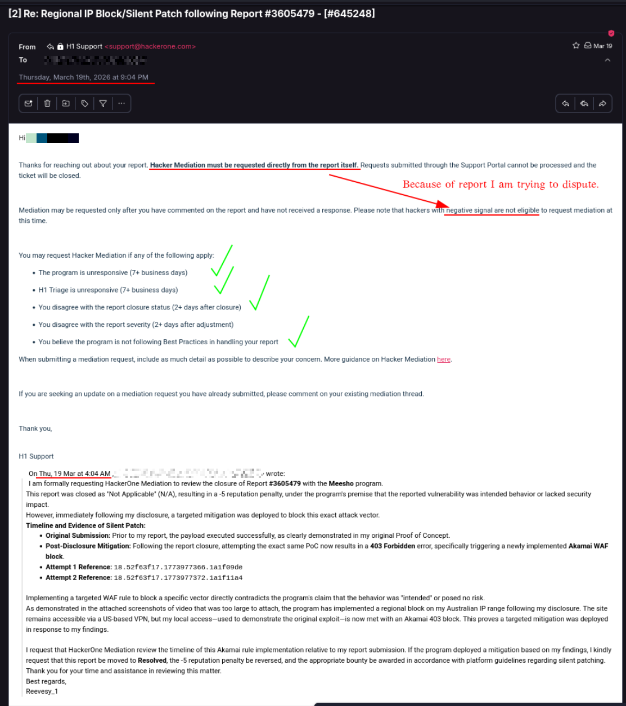
March 19, 2026, 4:04 AM: Support ticket filed requesting HackerOne Mediation to review closure of Meesho Report #3605479 (marked N/A, resulting in -5 reputation penalty). Response: "Hacker Mediation must be requested directly from the report itself. Requests submitted through the Support Portal cannot be processed and the ticket will be closed." The circular catch: mediation can only be requested after commenting on the report with no response, but hackers with negative signal are not eligible to request mediation.
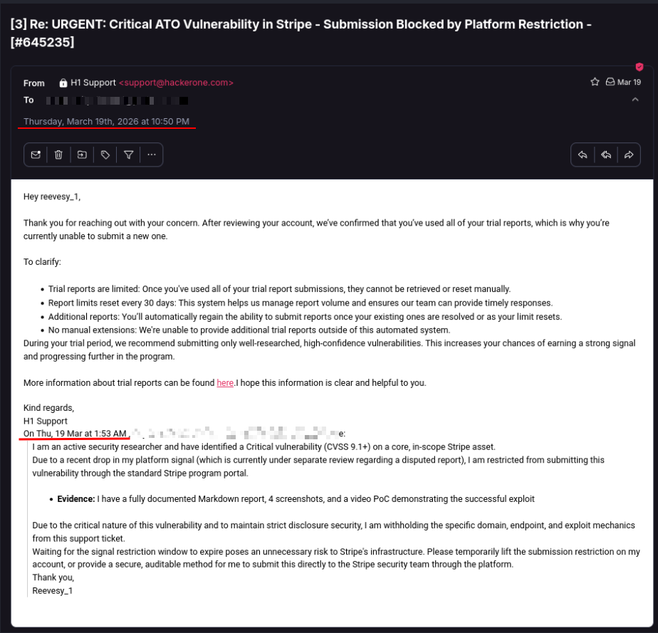
March 19, 2026, 10:50 PM: HackerOne response explaining trial report restrictions. "Trial reports are limited: Once you've used all of your trial report submissions, they cannot be retrieved or reset manually." The -5 rep penalty from Meesho triggered this limitation exactly when a Critical Stripe vulnerability needed immediate disclosure.
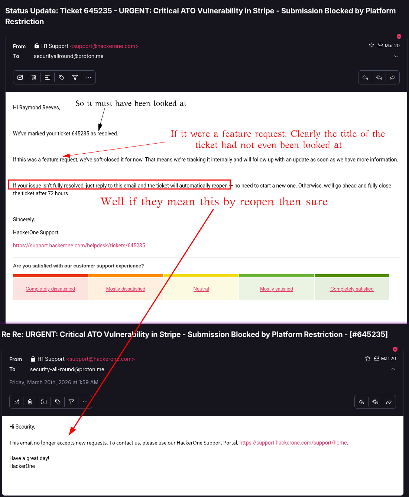
March 20, 2026, 12:49 AM: Support Ticket #645235 auto-closed as "resolved" and classified as a "feature request" despite title explicitly stating "URGENT: Critical ATO Vulnerability in Stripe — Submission Blocked by Platform Restriction." Promised 72-hour reopen window if issue not fully resolved.
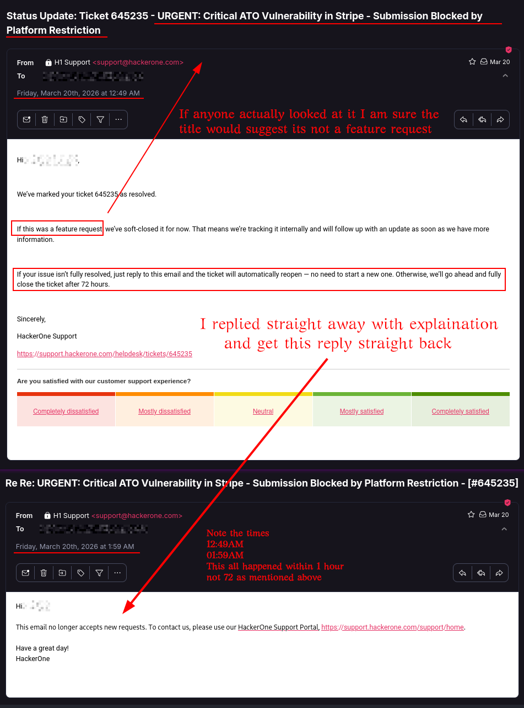
March 20, 2026, 1:59 AM: Reply sent within 10 minutes of the "resolved" closure explaining the issue is not resolved. Email bounced back: "This email no longer accepts new requests. To contact us, please use our HackerOne Support Portal." The 72-hour reopen window closed itself within 1 hour. Support channel eliminated on an active Critical disclosure.
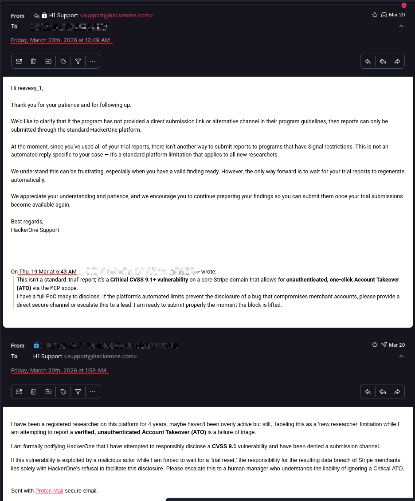
March 20, 2026, 12:49 AM: Second support response reiterating the platform limitation exists as designed. "At the moment, since you've used all of your trial reports, there isn't another way to submit reports to programs that have Signal restrictions. This is not an automated reply specific to your case — it's a standard platform limitation that applies to all new researchers." A CVSS 9.1+ vulnerability requiring immediate disclosure, actively blocked by platform design.
March 20: Exhausted every HackerOne channel. Did the only thing left — contacted Stripe Security directly on Twitter. Explained I had a Critical unauthenticated endpoint, withheld the PoC until we had a secure channel.
Stripe Security's response: They contacted HackerOne and forced them to lift my submission restriction.
Email from Sholihin Kamarudin (security@stripe.com): "We worked with HackerOne to remove the submission limitation on your account."
March 20, 23:06 UTC: Report #3619019 finally submitted. Full PoC, curl commands, 4 screenshots, screen recording, impact analysis.
March 21, ~22:56 AEST: Email from Stripe Support (Agent Divine): "Our security team has confirmed that the issue is now fully resolved. We really appreciate you bringing this to our attention."
They patched it in ~12 hours. On a Sunday.
March 23: HackerOne marks the report "Duplicate" of report #3597174.
That report? Submitted March 10. Marked Informative. Bounty: $0.
So let me get this straight:
March 25: Stripe Security comments: "This is intended behavior."
Four days after their own Support team confirmed it was "verified and fully resolved."
March 26: I checked the original webhook.site redirect URI I used in the PoC. The one that worked perfectly during testing.
Now? error: invalid_redirect_uri — "Not registered redirect_uri"
March 25, 15:49 UTC: Stripe denies my bounty citing "intended behavior."
March 24, 23:40 GMT: Stripe pays researcher @rcss $25,000 for a different report.
Same program. Same day. One researcher gets $25k. I get "intended behavior."
At this point I'm thinking: okay, this is fucked, but at least I can report the platform failure to HackerOne. The 5-day blockade that left a CVSS 10.0 endpoint exploitable while their submission restrictions prevented disclosure.
May 19, 2026: Submit report #3743325 documenting the platform security issue.
40 minutes later: Closed as "Informative." Severity downgraded from High to Low (CVSS 2.3).
Their reasoning: "The downstream impact on third-party vulnerability disclosure timelines is indirect and not part of HackerOne's system CIA assessment."
Then they added: "For reporting functional bugs, please submit at https://support.hackerone.com/support/home instead."
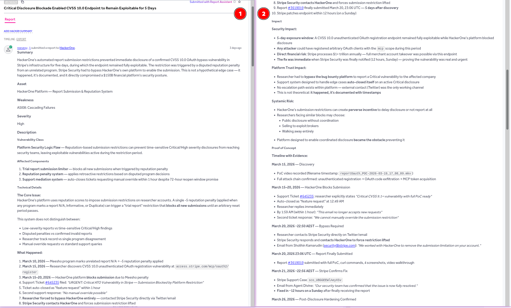
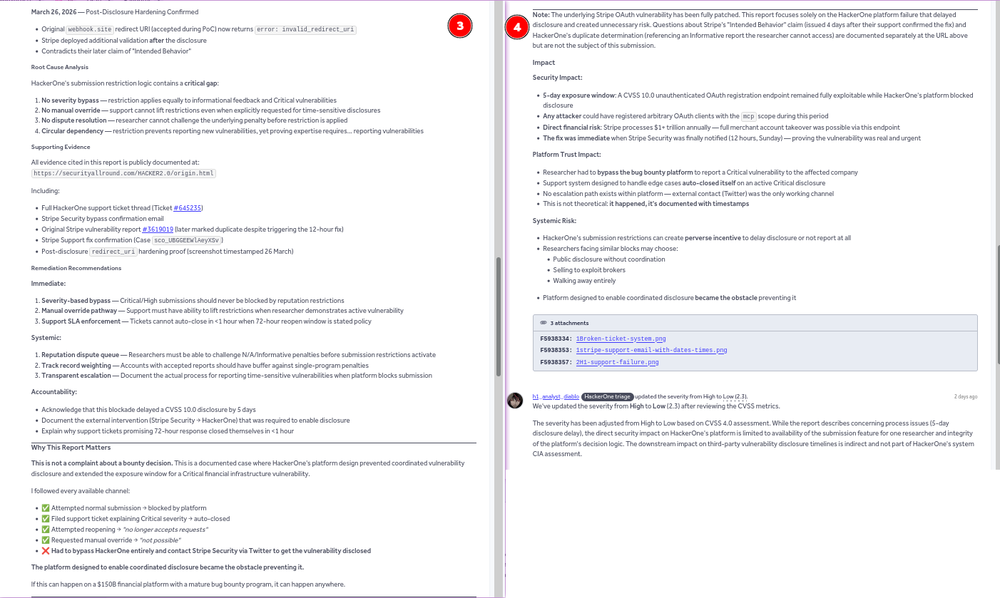
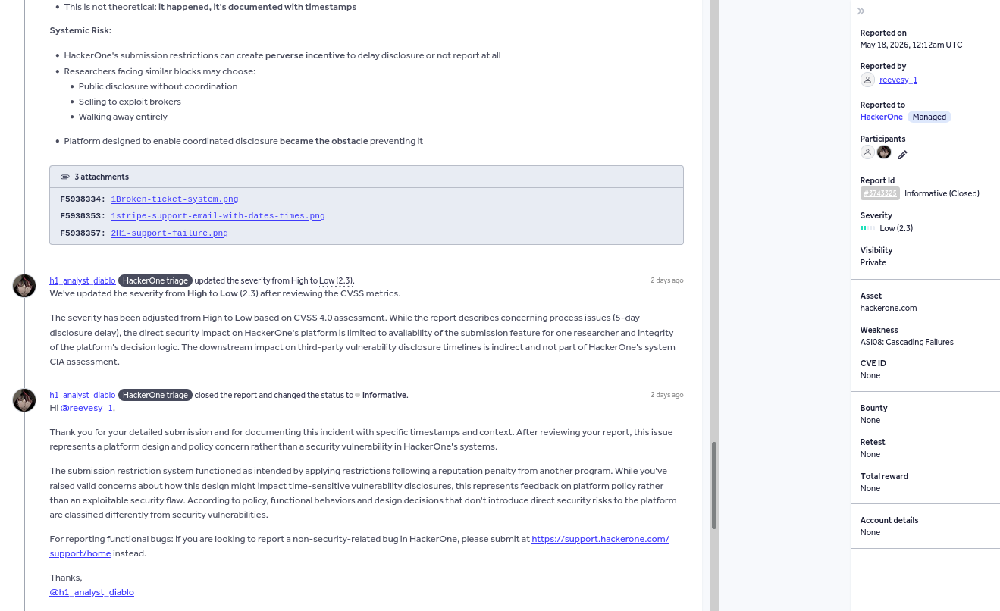
Report #3743325 closed as "Informative" within 40 minutes. Severity downgraded from High to Low (CVSS 2.3). Reason: "downstream impact on third-party vulnerability disclosure timelines is indirect and not part of HackerOne's system CIA assessment."
Alright. Fine. I'll file a support ticket like they asked.
Support ticket filed: Same issue. Submission restrictions blocked a Critical disclosure. Support auto-closed the original ticket. No manual override exists.
Support response (~1 hour later): "If you disagree with any report's decision, you can consider following up with the team in the report comments."
The problem: Comments are disabled on Informative reports unless you have >3000 reputation and signal >3.
My reputation: Blocked by the same submission restrictions that caused this whole mess.
I reported a circular trap. They responded by creating a circular trap.
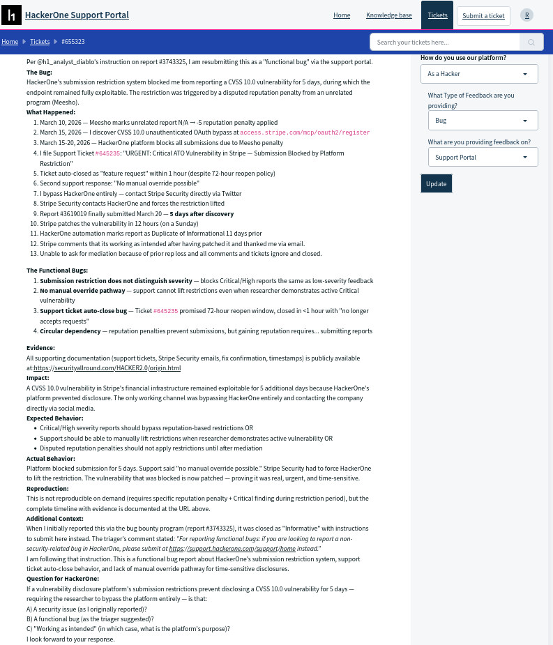
Support ticket #655323 filed May 20, 2026 as instructed by meta-report triager. Same issue: submission restrictions blocking Critical disclosure, no manual override pathway.
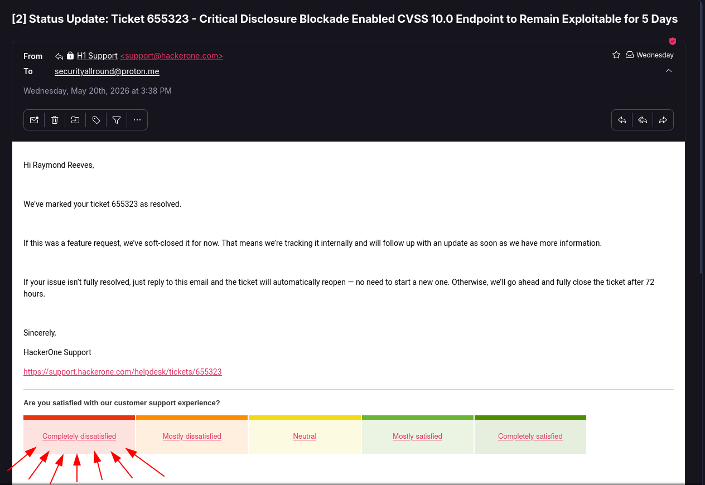
Support ticket #655323 marked "resolved" May 20, 2026 at 3:38 PM. Claimed it was soft-closed as a feature request and would be tracked internally. Promised 72-hour reopen window.
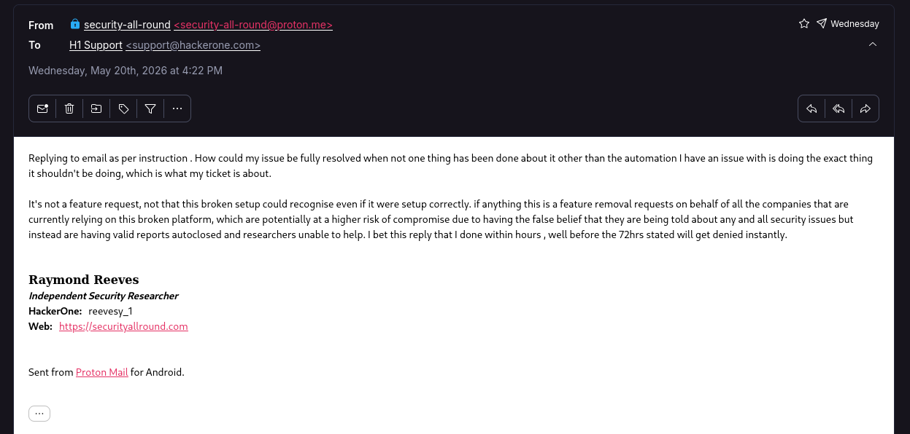
Researcher reply May 20, 2026 at 4:22 PM: "How could my issue be fully resolved when not one thing has been done about it other than the automation I have an issue with is doing the exact thing it shouldn't be doing?" Explained the circular dependency. This was the reply to the ticket they claimed had 72 hours to reopen.
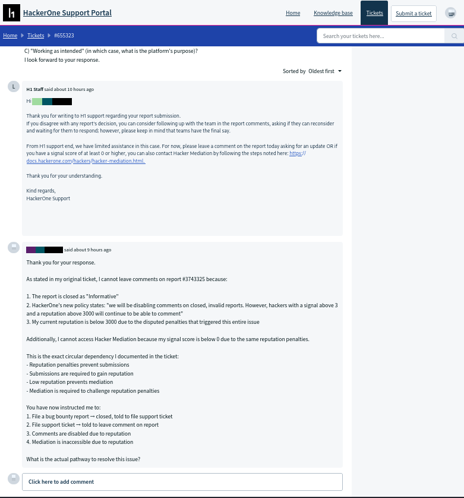
Support response (~10 hours later): "If you disagree with any report's decision, you can consider following up with the team in the report comments." Comments are disabled on Informative reports unless reputation >3000 and signal >3. The exact circular trap documented in the ticket.
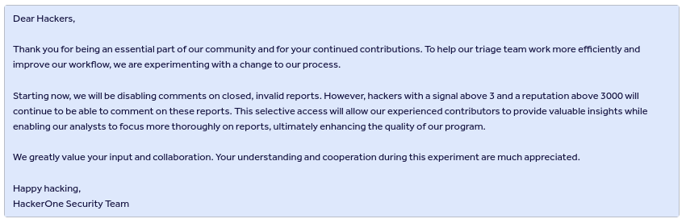
HackerOne's comment restriction policy deployed immediately after meta-report was closed: "Starting now, we will be disabling comments on closed, invalid reports. However, hackers with a signal above 3 and a reputation above 3000 will continue to be able to comment." The policy that creates the circular trap.
May 20, 2026, 12:25am UTC — 63 days after the original report: Filed formal mediation request.
Cited:
Response as of May 23: Zero. Not even an automated acknowledgment.
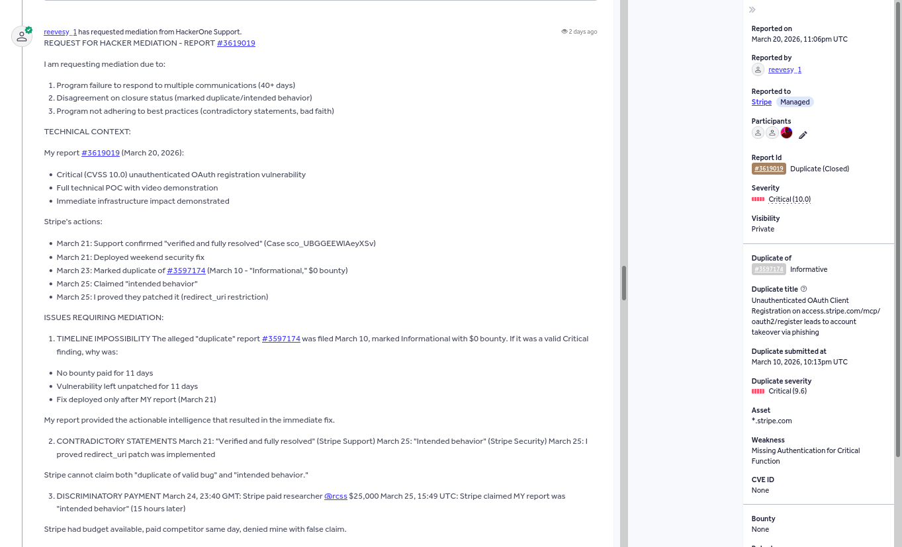
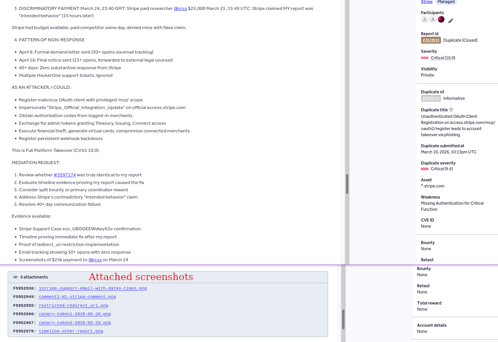
Full mediation request filed 63 days after original report submission. Cited timeline impossibility, contradictory statements, post-disclosure hardening proof, and discriminatory payment pattern. Requested formal review of duplicate determination. Attached 6 supporting screenshots including Stripe Support case confirmation, timeline evidence, redirect_uri restriction implementation, and $25k payment to competitor.
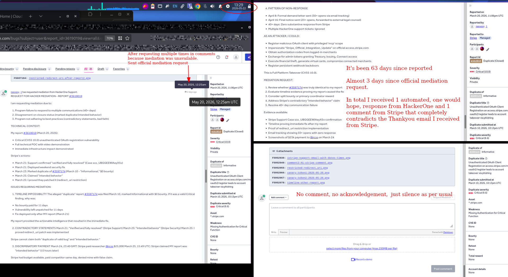
Screenshot taken ~3 days after mediation request filed. Total responses: Zero. No automated acknowledgment. No timeline for review. Complete silence. 63 days since original report.
Let me lay out every communication attempt:
Responses addressing technical evidence: 0
Responses to legal demands: 0
Responses to mediation: 0
This isn't about one bounty. It's about what happens when platform economics prioritize denial over disclosure.
HackerOne's submission restrictions left a CVSS 10.0 endpoint exploitable for 5 extra days. During that window, any attacker could have registered malicious OAuth clients and started collecting merchant authorization codes.
When I reported this platform failure, their response was: blocking disclosures to third parties isn't our security problem.
Then they created a resolution system where:
Every pathway either auto-closes, redirects in a circle, or goes silent.
I documented every single step. Timestamps, screenshots, emails, server logs. It's all public:
Including:
Everything. Receipts for days.
HACKER2.0 — because this shit shouldn't be possible.
Core principles:
Not because I'm bitter. Because platform economics create predictable failure modes, and those can be engineered out.
Full timeline with evidence: https://securityallround.com/HACKER2.0/origin.html
I'll update this if/when mediation responds. But after 63 days of pattern-matched silence, I'm not holding my breath.
Escrow-backed bounties. Automated silent-patch detection. Binding arbitration before a program can close a report without paying. No reputation system that can be weaponised to block a researcher mid-disclosure.
Join the Waitlist Read the Full Origin Story